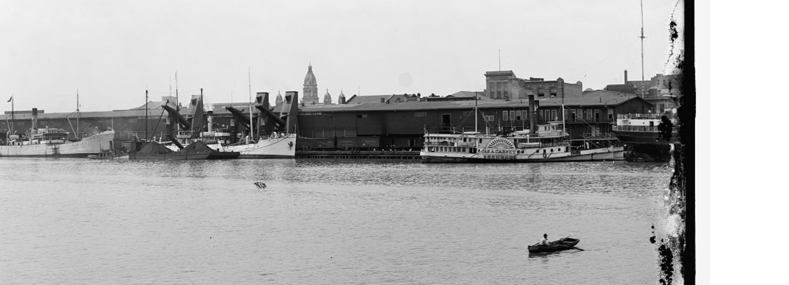

Mobile was already an old city when Alabama was young. Founded by the French in 1702, claimed by the British in 1763, taken by the Spanish in 1780, and finally brought under the American flag in 1813, Mobile carried the marks of every nation that had ruled the Gulf Coast. By the time Alabama joined the Union in 1819, Mobile wasn't a frontier town. It was a working port with its own traditions, its own architecture, and its own way of life.
The river and the bay shaped Mobile's character. Ships came and went every day, carrying cotton, timber, naval stores, and people from all over the world. The city heard more languages than any other place in Alabama, and its streets reflected that mix. French street names, Spanish customs, British merchants, and American officials all lived side by side. Mobile wasn't just part of Alabama. It was part of the Gulf.
When the United States took control in 1813, Mobile shifted from a colonial outpost to a growing American port. The War of 1812 brought soldiers and fortifications. The 1820s brought merchants and shipbuilders. The 1830s brought cotton wealth. By the 1850s, Mobile was one of the busiest cotton ports in the country, second only to New Orleans.
A piece of that layered history still stands downtown. Fort Condé, built by the French in 1723 and named for a prince of the French royal court, passed through the hands of all four nations that ruled Mobile - France, Britain, Spain, and finally the United States - before it was torn down in 1823. Reconstructed for the nation's bicentennial in 1976, about a third of the original fort stands today at roughly four-fifths scale, its rooms telling the story of every flag that ever flew over the city.
Why a Gulf Coast Colony?
Mobile didn't have Mayflower families in its early history, but it eventually became home to their descendants. The city's long life as a port meant that people from every part of the country passed through her streets. Some stayed, some married into local families, and some brought Pilgrim ancestry with them. The connection isn't colonial. It's the result of generations of movement and the steady pull of a coastal city that always attracted newcomers. Over time, Mobile became one of the places in Alabama where Mayflower descendants settled, not because of its founding, but because of its role as a gateway to the Gulf. The Alabama Society of Mayflower Descendants chartered Gulf Coast Colony here on April 26, 1986 - the oldest of our four colonies.
